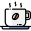

<div class="container-custom">
    <section *ngIf="user.connected" class="jumbotron-custom">
        <h1>Envie de sortir ?</h1>
    </section>
    <section class="mat-grid-container"> 
        <app-carousel [establishments]="establishments" *ngIf="user.connected == true"></app-carousel>
        <div class="filtersBar">
            <div class="moodChoiceButton">
                <mat-button-toggle-group class="mood-btn-toggle-group" name="moodButtons">
                    <mat-button-toggle class="mood-btn" (click)="onMoodClick(MOOD_BEER)" [value]="MOOD_BEER">
                        
                    </mat-button-toggle>
                    <mat-button-toggle class="mood-btn" (click)="onMoodClick(MOOD_PARTY)" [value]="MOOD_PARTY">
                        
                    </mat-button-toggle>
                    <mat-button-toggle class="mood-btn" (click)="onMoodClick(MOOD_CHILL)" [value]="MOOD_CHILL">
                        
                    </mat-button-toggle>
                </mat-button-toggle-group>
            </div>
            <div class="establishment-order-button">
                <mat-button-toggle-group class="order-btns" name="orderBtns" aria-label="orderBtns">
                    <mat-button-toggle class="order-btn" value="orderByBestNote" (click)="searchByBestNote()">Les mieux notés</mat-button-toggle>
                    <mat-button-toggle class="order-btn" value="orderByClosestDistance" (click)="searchCloset()">Les plus près</mat-button-toggle>
                  </mat-button-toggle-group>
            </div>
            <div class="distance-filter">
                <mat-icon>pin_drop</mat-icon>
                <small class="km">{{sliderValue}}km</small>
                <mat-slider
                    (change)="getSliderValue()"
                    [(ngModel)]="sliderValue"
                    class="distance-slider"
                    thumbLabel
                    [displayWith]="formatLabel"
                    step="1"
                    min="1"
                    max="100"
                    aria-label="units">
                </mat-slider>
            </div>
            <div class="inputs">
                <mat-form-field class="search-input" appearance="outline">
                    <mat-label>Ville</mat-label>
                    <input name="searchByCityInput" id="searchByCityInput" (keyup)="searchByCity()" [(ngModel)]="searchByCityInput" matInput placeholder="Ville">
                    <mat-icon matSuffix>location_city</mat-icon>
                </mat-form-field>
                <mat-form-field class="search-input" appearance="outline">
                    <mat-label>Nom de l'établissement</mat-label>
                    <input name="searchByNameInput" id="searchByNameInput" (keyup)="searchByName()" [(ngModel)]="searchByNameInput" matInput placeholder="Nom de l'établissement">
                    <mat-icon id="nameFieldIcon"  matSuffix>search</mat-icon>
                </mat-form-field>
            </div>
        </div>
        <a class="clear-filter" href="#">
            <div (click)="clearFilters()" class="cancel-filters">
                <mat-icon>close</mat-icon>
                <a>effacer les filtres</a>
            </div>
        </a>
        <mat-grid-list cols="2" rowHeight="2:1" gutterSize="3%">
            <mat-grid-tile class="tile" *ngFor="let establishment of establishments">
                <a [routerLink]="['/establishment', establishment?.id]"><app-establishment-card [establishment]="establishment"></app-establishment-card></a>
            </mat-grid-tile>
        </mat-grid-list>
    </section>
</div>
